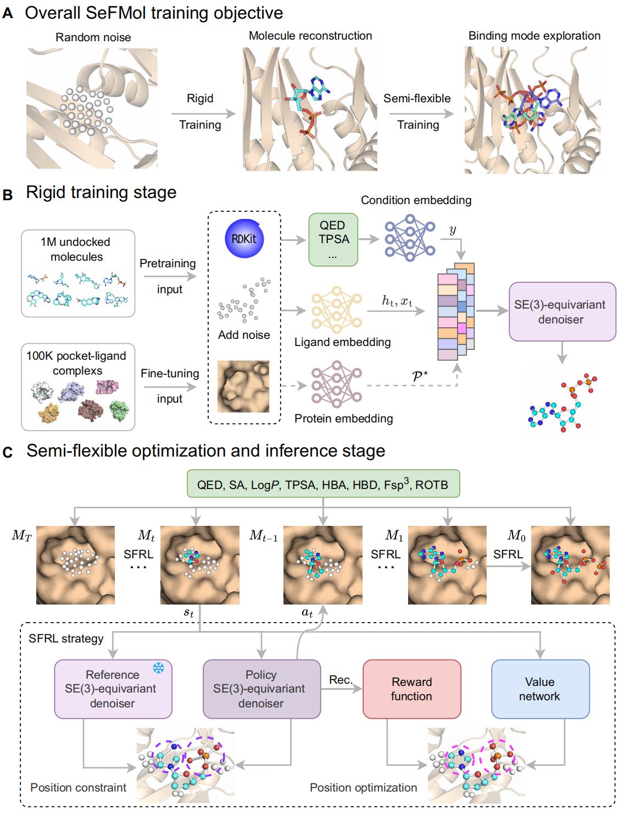

SeFMolAbout me
I am a Ph.D. student in Computer Science and Technology at Tongji University, supervised by Prof. Guang Chen, who leads the Generalist Embodied AI Lab.
My research interests lie in AI for Science (AI4Science), including drug discovery, antibody discovery, virtual cells and organs, and automated laboratories.
I am also a research intern at XtalPi, working on antibody–antigen interaction prediction and antibody design.
I welcome research collaborations and discussions across these areas. If you are interested in working together or exchanging ideas, please feel free to contact me at east@tongji.edu.cn.
News
- Our work (SeFMol) on structure-based molecular generation is accepted by Science Advances (IF: 12.5)! The online SeFMol Platform is now live for use and testing.
- I joined the Ailux & Antibody IDD department at XtalPi as a research intern, focusing on AI for antibody discovery.
- Received the Special Prize and Most Popular Award in the 19th Challenge Cup AI+ Special Competition.
- Our work (SWITCH) on spatial multi-omics is accepted by Nature Computational Science (IF: 18.3)!
- Our work (RCP-Bench) on collaborative perception is accepted by CVPR 2025!
- We won the championship (1/226) in The Second Global AI Drug Development Algorithm Competition!
- Our work (AMG) on 3D structure-based molecular generation is accepted by Briefings in Bioinformatics (IF: 7.7)!
- Our work on medical image segmentation is accepted by IEEE JBHI!
- Our work (Molormer) on drug-drug interaction prediction is accepted by Briefings in Bioinformatics (IF: 13.994)!
Selected publications
2026


Experience
Jan 2026 — Present
Research Intern
XtalPiAilux & 抗体IDD部
Developing computational methods for out-of-distribution (OOD) antibody–antigen interaction prediction and antibody design.
Honors & awards
- 2025.10 Special Prize and Most Popular Award, 19th Challenge Cup AI+ Special Competition
- 2024.12 First Prize in the 2nd Global AI Drug Development Algorithm Competition (1/226)
- 2023.04 Outstanding Graduate of Shandong Province
- 2022.12 National scholarship for Postgraduates
Academic service
Journal reviewer
- Briefings in Bioinformatics
- IEEE Journal of Biomedical and Health Informatics
- Journal of Cheminformatics
- BioData Mining
- BMC Bioinformatics